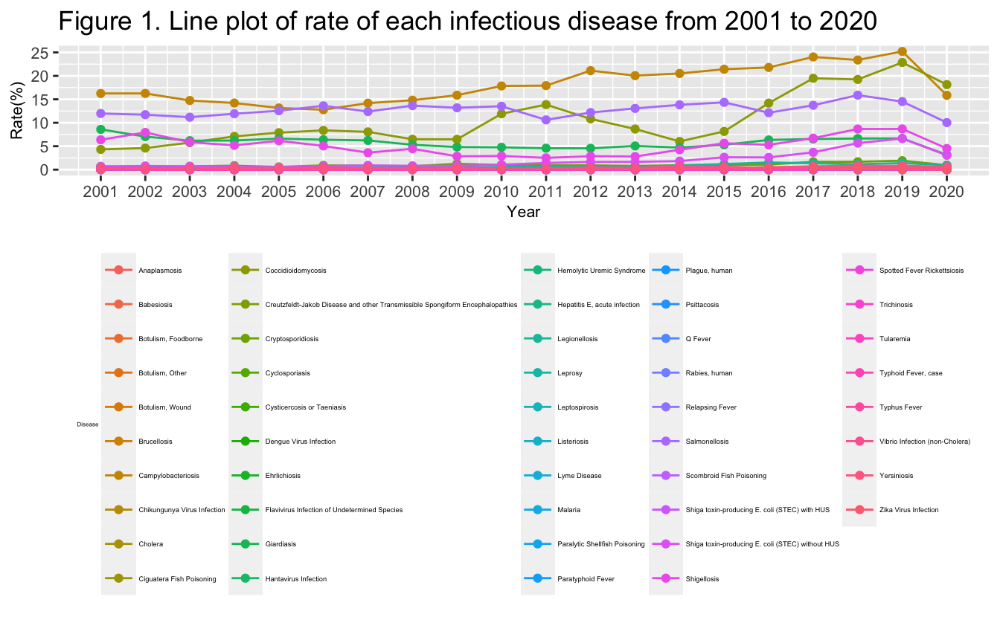
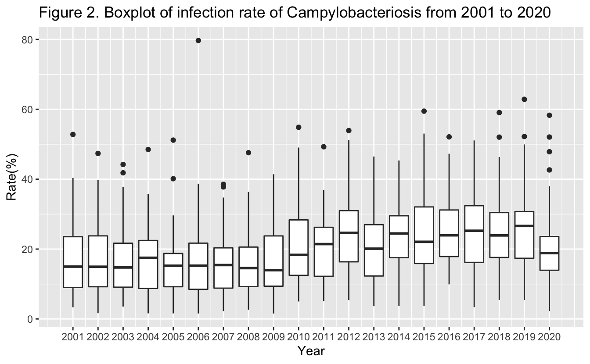
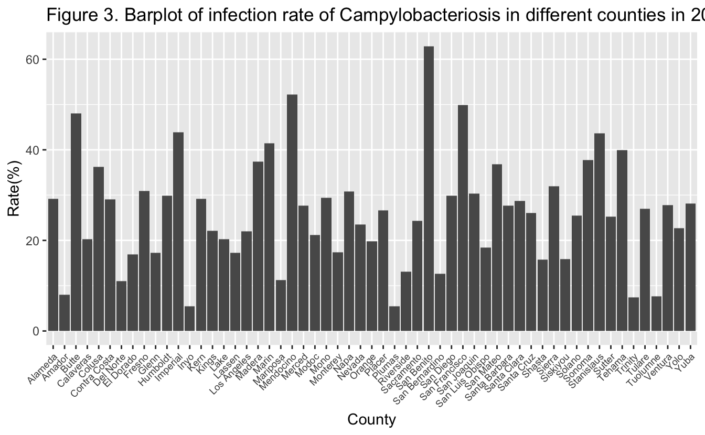

The most well-known infectious disease probably is the COVID-19, because it has been bothering us for several years. Fortunately, we have vaccines and drugs against COVID-19. However, a lot of infectious diseases have not been known widely. Although they may have limited influence on our lives, I think we should still pay attention to them. Because they also cause diseases and even death.
Therefore, I found a dataset called Infectious Diseases by Disease, County, Year, and Sex. It is downloaded from California Health and Human Services Open Data Portal.
This dataset contains case counts and rates by disease, county, year, and sex for selected infectious diseases that met the surveillance case definition in California. There are 9 columns in the dataset: Disease, County, Year, Sex, Cases, Population, Rate, Lower_95__CI, and Upper_95__CI. There are 167,974 rows. The data represent cases with an estimated illness onset date from 2001 through the last year indicated from California Confidential Morbidity Reports and/or Laboratory Reports. Data captured represent reportable case counts as of the date indicated in the “Temporal Coverage” section below, so the data presented may differ from previous publications due to delays inherent to case reporting, laboratory reporting, and epidemiologic investigation.
After looking at the whole dataset, we formed some questions: What is the infectious disease with the highest prevalence, and in which year the diseases had a highest infection rate? In that year, did the diseases spread evenly across the whole state? Is there a significant difference in infection rates between males and females?
Data was downloaded from “https://data.chhs.ca.gov/dataset/infectious-disease”.
Geographical data was downloaded from “https://public.opendatasoft.com/explore/dataset/us-county-boundaries/export/?disjunctive.statefp&disjunctive.countyfp&disjunctive.name&disjunctive.namelsad&disjunctive.stusab&disjunctive.state_name&refine.stusab=CA”.
First, I merged the main dataset and geographical dataset.
The dataset combined dataset has 11 columns. Among them, columns “Cases” and “Rate” have several missing values because of “Scoring Criteria” prevent them from being publicated. Thus, we can remove them.
The data type of column “Rate” is chr, which we do not want it to be. Thus, we change the data type to num.
The “County” column includes rows called “California”, which is the state not a county, so we delete them. I saved the aggregate “California” data into a new variable “Cal”.
We made a line plot to show rate of each infectious disease from 2001
to 2020.

Figure 1. Line plot of rate of each infectious disease
from 2001 to 2020
From the plot, we can see that
Campylobacteriosis, Salmonellosis,
Giardiasis, Shigellosis, and
Coccidioidomycosis always have a high infection rate from 2001
to 2020. We also notice that Shiga toxin-producing E. coli (STEC)
without HUS rate has increased a lot since 2011.
Let’s look further at the disease with the highest infection rate – Campylobacteriosis.

Figure 2. Boxplot of infection rate of
Campylobacteriosis from 2001 to 2020
From the plot, we can see that
infection rate of Campylobacteriosis is high in
2019.
Let’s look at the disease in each county in 2019.

Figure 3. Barplot of infection rate of
Campylobacteriosis in different counties in 2019
From the plot, we
can see that San Benito has a highest infection rate of
Campylobacteriosis in 2019. Alpine has the lowest
infection rate.
Let see the data in a map view to see if there is a geographical factor playing a role.
Figure 4. Leaflet map of the infection rate of Campylobacteriosis in 2019
We made a table to see that if infection rates are the same for different genders.
| Sex | Cases | Population | Rate |
|---|---|---|---|
| Female | 20 | 30943 | 64.635 |
| Male | 19 | 31108 | 61.078 |
| Total | 39 | 62051 | 62.852 |
Table 1. infectious rates of Campylobacteriosis by different genders in San Benito in 2019.
I did a Pearson’s Chi-square test.
##
## Pearson's Chi-squared test with Yates' continuity correction
##
## data: contingency_table
## X-squared = 0.00027594, df = 1, p-value = 0.9867There is not a significant difference between male and female for the infection rate of Campylobacteriosis in San Benito in 2019 (p = 0.9867).
This study gives us a preliminary overview of the infectious diseases in California. Most infectious diseases keep a relative low infection rate from 2001 to 2020. However, some of diseases increased a lot in infection rate since 2001. Further analysis can focus on the reason why to this phenomenon. Interestingly, the infection rates of some high infection rate diseases decreased significantly from 2019 to 2020. This is not a very usual phenomenon. It may have something to do with COVID-19, because people wore masks and reduced their travels in 2020. Beacuse of limited information in this dataset, further analysis need more dataset.